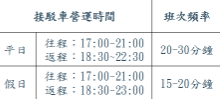
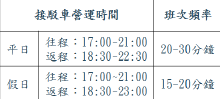
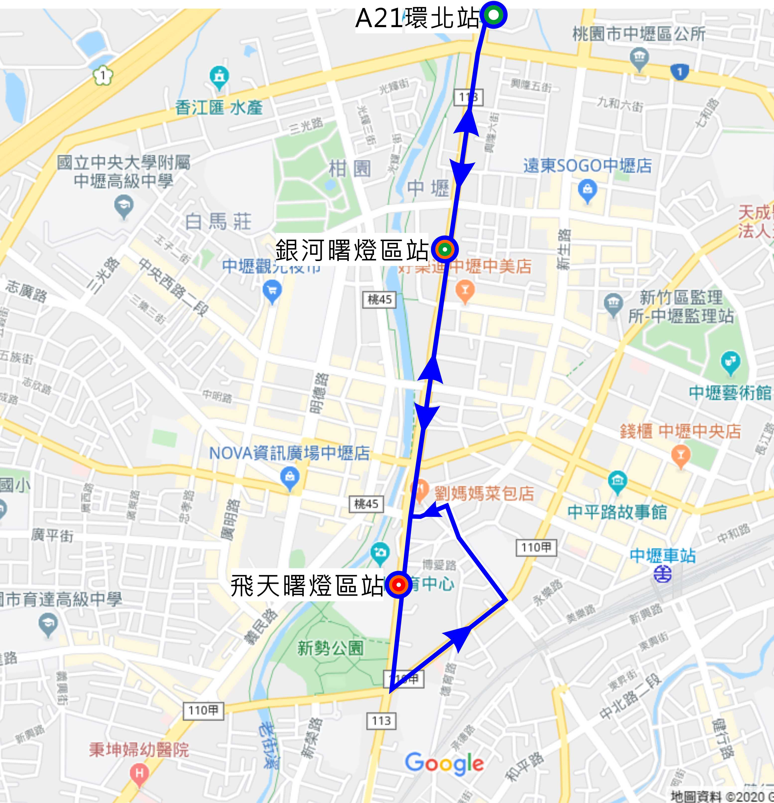

活動DM下載
首 頁
最新消息
關於燈會
燈區介紹
表演節目
活動資訊
交通資訊
2020光之桃園・選單
首 頁
最新消息
關於桃園燈節
燈區介紹
表演節目
活動資訊
交通資訊
首頁
交通資訊
燈區位置圖
公車/免費接駁車
燈區位置圖
台鐵/機捷/高鐵
公車/免費接駁車
自行開車
交通管制資訊
平鎮新勢公園(飛天曙光燈區)
L208
內環黃線(免費公車)
老街溪河川教育中心(中原路)
301
桃園-楊梅
新勢國小(新勢公園)
5623
楊梅-捷運環北站(經中壢火車站)
新勢國小(新勢公園)
中壢光明公園(大地曙光燈區)
L208
內環黃線(免費公車)
中壢觀光夜市(新明路)
中壢老街溪河岸公園(銀河曙光燈區)
120
捷運環北站-太子鎮
興國市場(中豐北路)
132
中壢-中央大學-高鐵桃園站
河川教育中心(中正路)
L208
內環黃線(免費公車)
興國市場(元化路二段)、中央中豐路口
703
竹圍-中壢
中央中豐路口
5623
楊梅-捷運環北站(經中壢火車站)
興國市場(中豐北路)

紅線
泰豐輪胎停車場 → 中壢聯合辦公大樓 → 第一銀行 → 飛天曙光燈區 → 中壢分局 → 中壢聯合辦公大樓 → 泰豐輪胎停車場

綠線
六和停車場 → 機場捷運A21環北站 → 銀河曙光燈區 → 六和停車場
藍線
燈會展區接駁車晚上6:00從機場捷運A21環北站開始
路線：機場捷運A21環北站->銀河曙光燈區->飛天曙光燈區->銀河曙光燈區->機場捷運A21環北站
間距：20分鐘一班
路線顏色：藍線
站牌位置：銀河曙光燈區(雙邊下車/站牌位置:興國市場站)；飛天曙光燈區(單邊下車/站牌位置:老街溪河川教育中心站)
